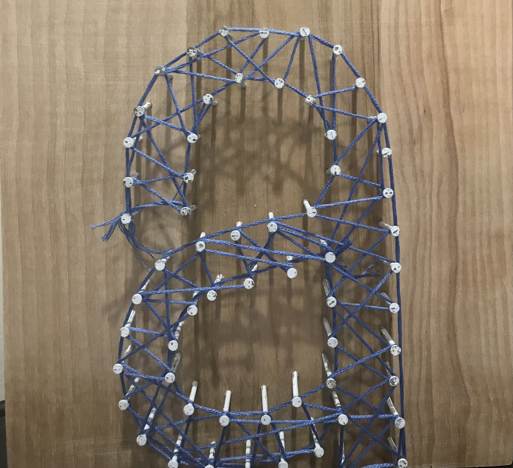

What is Pinned?
Pinned string art boards are a fun and unique decoration that you can customize. You can pick your colors, and the art can match your name or just be an interesting symbol. Pinned products also come with colored tags that have quotes to inspire your day.
